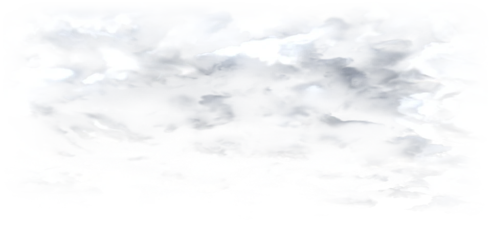

Tropical Rain & Mist
Active regional weather advisory in effect. Tap to view official meteorological bulletin and safety precautions.
4
Moderate
Use sun protection until 4:00 PM.
NW · Gusts to 14 mph
6:48 PM
Sunrise: 6:58 AM tomorrow
35
Good
Air quality is ideal for outdoor activities.
54%
The dew point is 52° right now.
74°
Similar to the actual temperature.
10 mi
Perfect atmospheric clarity.
30.04
inHg